49Caliber Labs engineers BiteWindow Vector7 (available now for a one-time $9.99 Lifetime License with free updates forever and zero ads), alongside our free MIT open-source releases: MeshMule-Core (915 MHz LoRa binary mesh & barometric ∇P telemetry) and ACE-10: The Architect Council Engine (4-Gate cognitive execution & anti-bluffing architecture for frontier AI coding agents).
Unlicensed FCC Part 15 915 MHz ISM band
Board + battery + case + 915 MHz antenna + BME280
IP67 enclosure + solar + LiFePO4/Li-Ion + 5.8 dBi omni
One-Time Lifetime License • Free Updates
We reject recurring subscription traps and ad-bloated field utilities. Purchase BiteWindow Vector7 once for $9.99 with lifetime updates forever, and download our open-source ACE-10 and MeshMule-Core releases completely free under the MIT License.
Package ID: com.caliber49labs.bitewindow (Android & Web)
Offline-first coastal, tidal, 7-vector hydro-meteorological bite intelligence, and 915 MHz LoRa off-grid backcountry communicator for anglers, mariners, and backcountry teams.
Repo: github.com/49Caliber-Labs/ACE10-Architect-Council
Our production 4-Gate cognitive execution pipeline and Zero-Stub Anti-Bluffing system instruction for frontier AI coding agents (Gemini, Claude Code, Cursor, Codex).
Repo: github.com/49Caliber-Labs/MeshMule-core
Citizen-science sub-GHz LoRa binary framing, distributed barometric phased-array (∇P) front solver, and RF moisture tomography engine.
When you drop into a steep granite river gorge, ride miles past the last trailhead, fish an offshore kelp bed, or manage a 2,000-acre foothill ranch, cellular coverage vanishes and commercial satellite communicators charge recurring monthly subscriptions for restricted text allowances.
MeshMule-Core (our MIT-licensed binary telemetry protocol) and BiteWindow (our offline coastal and backcountry field app) connect smartphones over BLE GATT or USB-OTG to complete, enclosed $65–$95 915 MHz LoRa field transceivers (such as the LilyGO T-Echo or cased RAK4631/Heltec V3 builds with onboard barometers, batteries, and tuned whip antennas). Linked through $90–$310 solar ridge repeaters, dispersed field nodes form a cooperative environmental sensor network with $0 monthly airtime cost.
Free group breadcrumbs, canyon-to-rim check-ins, offline NOAA tides, and barometric squall alerts with $0 monthly fees.
Low-cost solar trailhead repeaters and micro-climate stations tracking canyon humidity, fuel moisture, and pressure fronts.
Multi-mile 915 MHz telemetry for vineyard frost pockets, soil moisture probes, headgate flow, and remote stock tanks.
Proving grounds in harsh outdoor terrain directly feed our long-horizon SAR and dual-use tactical R&D algorithms.
Grounded in open-source algorithmic implementations and COTS 915 MHz / 868 MHz LoRa hardware interfaces for offline-first telemetry, atmospheric sensing, and GPS-denied localization.
| Parameter / Subsystem | MeshMule-Core (Public MIT Repo) | BiteWindow (Commercial Edge App) | Target COTS Radio Baseline |
|---|---|---|---|
| RF Operating Band | 902–928 MHz (US ISM) / 868 MHz (EU) | BLE GATT & USB-Serial OTG Bridge | Semtech SX1262 (Heltec V3 / RAK4631) |
| Telemetry Frame Structure | Compact Binary + CRC-16/CCITT | Local IndexedDB / SQLite Persistence | Meshtastic Protobuf / Raw Serial Framing |
| Environmental Solver | Least-Squares Barometric ∇P Array | NOAA CO-OPS Tides & NDBC Wave Energy | BMP280 / BME680 + Phone MEMS Barometer |
| Localization & Propagation | RSSI/SNR Tomography & SAR Trilateration | Offline Coastal & Backcountry Map Layers | ITU-R P.838-3 & Log-Distance Path Loss |
| Licensing & Maturity | MIT Open-Source (23 Modules Live) | Proprietary Commercial Android Build | TRL 3–4 (Algorithmic & Bench Prototype) |
Bare development PCBs ($20–$35) cannot survive a river canyon on their own. Below is our 4-tier protocol architecture paired with the real-world retail Bill of Materials (board, battery, weatherproof enclosure, tuned 915 MHz antenna, and barometric sensor) required for actual field deployment.
Enclosed 915 MHz SX1262 radios (BLE GATT / USB-OTG), LiPo/LiFePO4 cells, tuned antennas, and BME280/BME680 barometers.
$0/mo unlicensed 915 MHz ISM multi-hop relay from deep canyon floors to rim repeaters with CRC-16 integrity.
Peer-to-peer spatial pressure-gradient vectors, squall-front velocity, and RSSI/SNR moisture attenuation modeling.
Offline trail/coastal maps, angler bite & tide windows, agricultural frost alerts, and experimental SAR trilateration.
Quoting a bare $25–$35 PCB is misleading—a bare circuit board has no battery, no weatherproof housing, a poor stub antenna, and often lacks a barometric pressure sensor. Below is the complete, un-sugar-coated retail cost for fully enclosed, field-ready 915 MHz nodes that execute the MeshMule-Core stack:
| Field Node Role & COTS Example | Mandatory Included Components (All-In) | Primary Vendors | Real Retail Price |
|---|---|---|---|
|
1. Complete Pocket / Pack Handheld (With Barometer) e.g. LilyGO T-Echo (BME280) / T-Echo Plus |
nRF52840 MCU + SX1262 915 MHz LoRa + L76K GPS + onboard BME280 barometer/temp/humidity + 1.54" e-paper screen + ABS enclosure + 850–2,400 mAh LiPo battery + SMA 915 MHz whip antenna | LilyGO, Rokland, Mesh-Lab | $64 – $95 |
|
2. Modular Rugged Handheld / Vehicle Node e.g. RAK WisBlock 4631 or Heltec V3 Assembled Build |
Core board ($25–$35) + 2,000–3,000 mAh protected LiPo/18650 cell ($14) + I2C BME680 barometric/environmental module ($12) + 17 cm 915 MHz whip & SMA bulkhead pigtail ($12) + rugged polycarbonate/PETG case ($20) | Rokland, RAKwireless, Muzi Works | $70 – $95 |
|
3. Ultra-Light Trail Breadcrumb Card Tag e.g. Seeed SenseCAP Card Tracker T1000-E |
IP65 sealed credit-card housing + nRF52840 + LR1110 915 MHz transceiver + AG3335 GPS + 700 mAh battery + magnetic USB charger (Note: internal antenna & no BME280 barometer; best for rider/hiker position beacons) | Seeed Studio, Mouser, DigiKey | $40 – $55 |
|
4. Compact Solar Trailhead / Vineyard Repeater e.g. RAKwireless WisMesh Repeater Mini |
IP67 weatherproof solar enclosure + integrated solar panel + RAK4631 LoRa module + 3,200 mAh internal battery + external 915 MHz blade/omni antenna + pole/tree mounting bracket | RAKwireless, Rokland | $90 – $100 |
|
5. High-Elevation Canyon Rim / Park Solar Station e.g. WisMesh Unify Solar Kit + 5.8 dBi Fiberglass Omni |
IP67 Unify outdoor enclosure + 10W–20W external solar panel + 5.2 Ah cold-weather battery pack + RAK4631 + BME680 sensor probe + 5.8 dBi N-Type fiberglass omni antenna + low-loss coax & mast clamps | Rokland, RAKwireless | $185 – $310+ |
Explore how 915 MHz sub-GHz LoRa frames overcome steep canyon walls by bouncing off elevated ridge solar relays, how remote park stations track barometric fronts (∇P), and how foothill ranches monitor frost & soil moisture across multi-mile terrain.
We lead with free-payload, low-cost public utility for hikers, bikers, anglers, parks, and agriculture—using real-world canyon, coastal, and rural terrain as the proving ground for our longer-horizon tactical and search-and-rescue R&D.
California state agencies and prime defense contractors leverage 49Caliber Labs through statutory direct-award mechanisms that bypass formal advertising and multi-month procurement cycles.
Statutory direct-award mechanism for goods, services, and IT valued between $5,000.01 and $249,999.99 without formal public advertising upon collecting two quotes from certified SB or DVBE firms.
Under California Budget Letter 26-02 and Public Contract Code § 10105, inflation-indexed minor capital and installation threshold stands at $484,000 without full DGS oversight.
State departments must allocate ≥ 3% of annual spend to DVBEs. Formal solicitations apply a 5% bid evaluation preference for DVBE primes or primes with qualifying DVBE subcontracts.
Your selected IT/Software deliverable is fully within the statutory threshold ($5k–$250k). Any California state agency (Caltrans, Cal OES, DGS, Corrections) can award this contract directly without an RFP or formal protest period.
How 49Caliber Labs leverages California Revenue & Taxation Code Section 23609 credits, Section 174 expense shields, and municipal zoning compliance in Vallejo to run a lean, high-output R&D machine.
Organized under the California Corporations Code to accept venture funding while capturing the first-year $800 minimum franchise tax exemption under R&TC § 23153. Unlike federal mandates requiring Section 174 capitalization over 5 years, California does not conform, permitting full immediate local deductions of research expenses.
Operating our initial research and prototyping lab within Solano County with a certified Fictitious Business Name (FBN) registered with the Solano County Clerk and strict adherence to Vallejo Municipal Code § 16.60 (Home Occupations: ≤20% floor space, ≤400 sq ft, zero hazardous outdoor storage, delivery vehicles ≤16,000 lbs GVWR).
Whether you are a DoD procurement officer issuing an SB/DVBE direct RFQ, a defense prime seeking AFWERX Phase II teaming, or a municipal responder upgrading emergency communications.
One-page summary formatted for procurement officers.